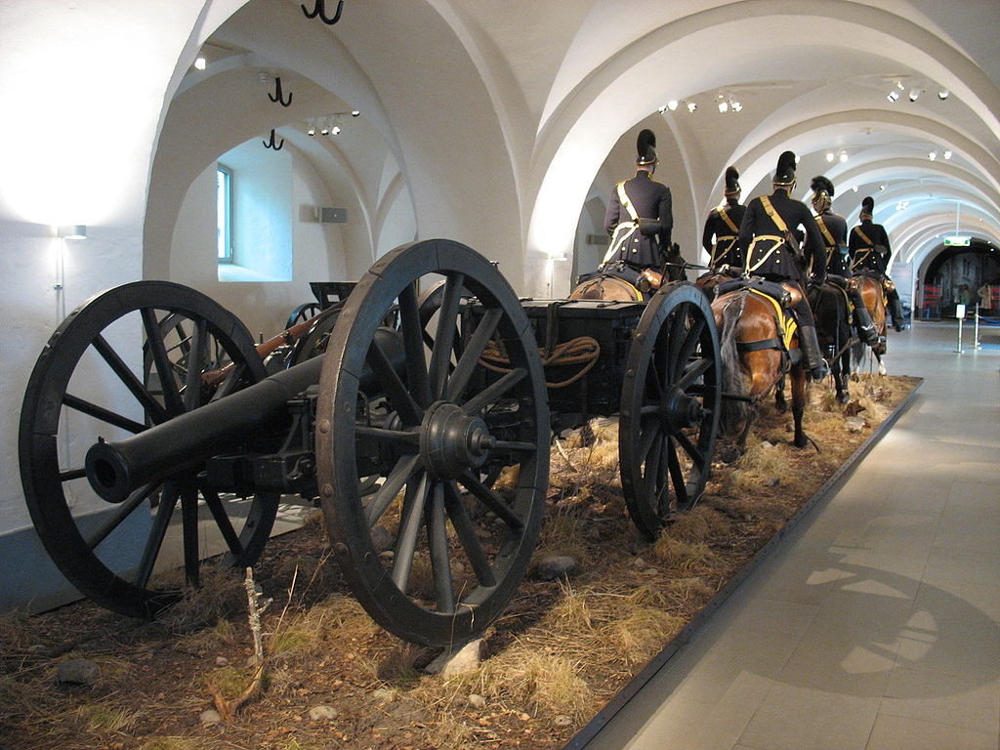
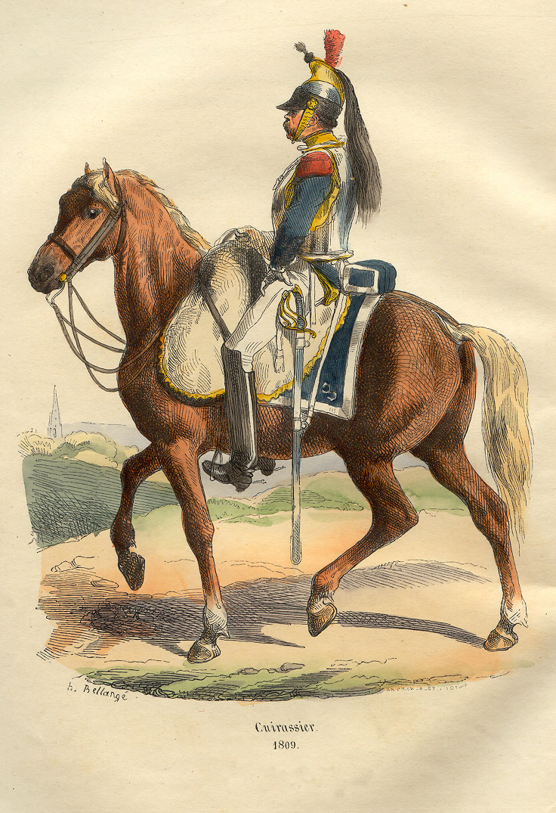
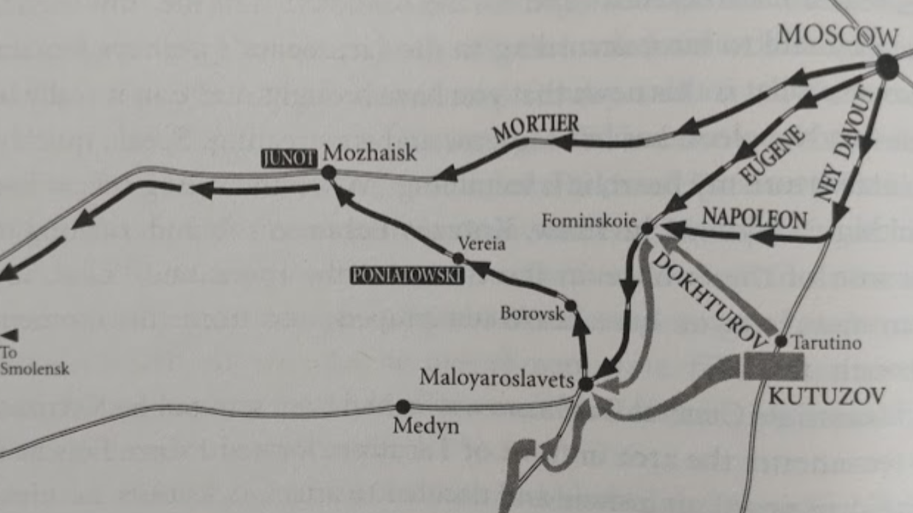
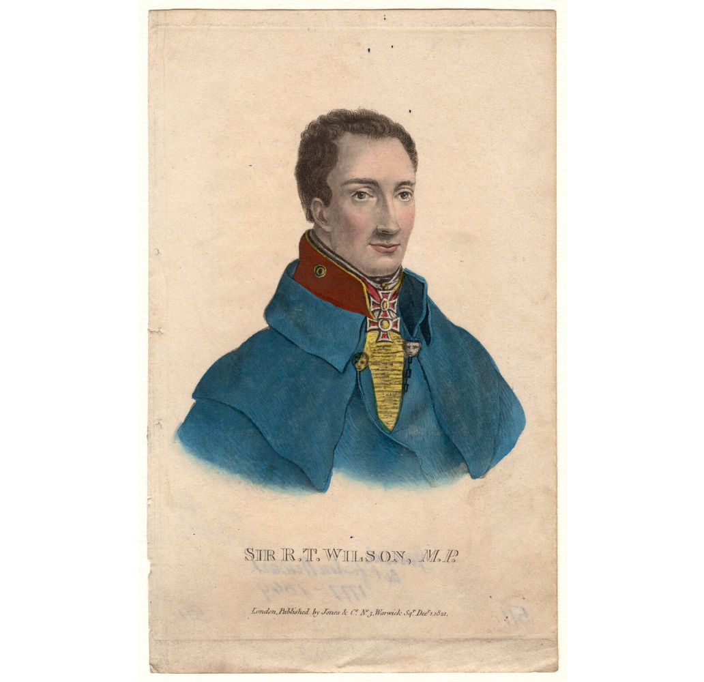

승자의 번민, 패자의 고뇌 - 3개의 선택지
게시: 2021-05-31T06:30:21+09:00
말로야로슬라베츠 전투는 분명히 나폴레옹의 승리였으나 나폴레옹은 꼭 웃을 처지는 아니었습니다. 이 전투에서 그랑다르메는 약 6천의 병력을 잃었습니다. 당시 말로야로슬라베츠 인근에 모인 그랑다르메 병력은 약 7만이었는데, 그 중 10% 정도를 잃은 것이었고 전투에 투입된 2만7천 중 20%를 넘는 사상자를 낸 셈이었습니다. 점점 격렬해지는 전투 양상 때문에 특히 아스페른-에슬링 전투 이후로는 승전한 군대의 사상률도 그 정도 나오는 것이 보통이라고 하지만 1806년 프로이센 원정 때까지만 하더라도 이건 패전할 때나 나오던 사상률이었습니다. 물론 러시아군은 더 큰 피해를 입어 약 8천 정도의 사상자를 냈습니다. 그러나 러시아군은 계속 증원될 수 있었습니다. 게다가 러시아군이 이 전투에 동원한 354문이라는 막대한 포병 전력은 그랑다르메의 기를 꺾기에 충분한 화력이었습니다. 어쩌다 그랑다르메가 포병 화력에서 형편없이 밀리게 되었을까요? 네만 강을 건넌 이후 그랑다르메는 단 한 번도 패배하지 않고 계속 러시아군을 패배시켰으며 모스크바까지 점령하여 그 거대한 무기고를 마음껏 약탈할 수 있었습니다. 따라서 포병 화력이 줄어들 이유가 전혀 없었습니다. 핵심 이유는 결국 말이었습니다. 말 사료 부족으로 말을 계속 잃어왔고, 남은 말들도 너무 허약해져서 힘이 너무 떨어졌습니다. 평상시라면 6마리가 끌던 6파운드짜리 경포도 이젠 12마리 이상이 붙어야 간신히 움직일 수 있을 정도였습니다. 그러다보니 전장에 제때 동원할 수 있는 대포의 수가 계속 줄어들 수 밖에 없었습니다. 또 말이 없으니 기병대도 없었고, 기병대가 없으니 추격전은 꿈도 꿀 수가 없었습니다. 말로야로슬라베츠 전투에서 열정에 넘치는 이탈리아군이 러시아군을 무찔렀지만, 당시 전투에서 진짜 전과는 패주하는 적을 추격할 때 나오는 법이었습니다. 그런데 추격을 못하니 전과 확대가 되질 않았고, 과거 같으면 기세를 몰아 수천 명의 포로를 잡았을 상황에서 그냥 전투를 중단해야 했습니다. 덕분에 러시아군은 멀리 도망치지도 않고 말로야로슬라베츠 바로 남쪽 언덕 지대에 진을 치고 대치 상태에 들어갔습니다.

(이 사진은 스웨덴 육군 박물관에 있는 1850년대 기마 포병대의 실물 모형입니다.) 나폴레옹은 이런 식으로 계속 전투를 해나간다면 결국 그랑다르메는 전멸할 수 밖에 없다는 것을 깨닫습니다. 전투가 끝난 10월 24일 밤, 그는 부하 원수들을 불러모으고 작전회의를 했습니다. 나폴레옹이 취할 수 있는 선택지는 총 3가지였습니다. 1안) 쿠투조프의 본진과 다시 정면 대결을 벌인다. 네만 강을 건넌 이후 내내 그것이 목표 아니었던가? 2안) 쿠투조프에게 한방 먹이고 메딘(Medyn)을 경유하는 철수로를 확보한다는 1차 목표를 달성했으니 미련없이 메딘을 향해 철수한다. 3안) 모즈하이스크로 거슬러 올라가서 원래 왔던 길인 모스크바-스몰렌스크 대로를 타고 철수한다. 애초에 나폴레옹이 여기까지 왔던 이유는 딱 하나, 2번안을 추구하기 위한 것이었습니다. 그러니 망설일 필요도 없이 그냥 2번안을 택하면 되는데 왜 나폴레옹은 어울리지 않게 부하들을 불러모으고 그들의 의견을 들었을까요? 그는 원래 부하들 앞에서 장광설을 늘어놓는 편이었지 부하들의 의견을 경청하는 스타일은 아니었습니다. 평상시와 마찬가지로 아무 생각이 없던 뮈라는 '이렇게 된 김에 사내답게 쿠투조프와 건곤일척을 겨루자'면서 1번안을 주장했습니다. 그러나 그를 제외한 거의 모든 제장들이 3번안을 주장했습니다. 이유가 무엇이었을까요? 나폴레옹의 원안대로 2번안을 택할 경우 러시아군 주력을 바로 발뒤꿈치에 달고 가는 셈이기 때문이었습니다. 특히 후퇴할 때 적의 주력을 바로 뒤에 달고 가는 것은 매우 위험한 일이었습니다. 후퇴길은 천상 길게 늘어질 수 밖에 없었는데, 그렇게 길게 늘어진 진형의 맨 후미 부대를 적 주력부대가 포착해서 공격할 경우, 후미 부대는 꼼짝없이 중과부적으로 당할 수 밖에 없었습니다. 그렇다고 후미가 공격당할 때마다 대열 중간이나 선두의 부대들이 되돌아와서 후미 부대를 도와 적과 싸울 수도 없었습니다. 그랬다가는 전진과 후퇴를 반복하다가 얼마 가지도 못하고 러시아의 혹독한 겨울을 길 위에서 맞게 될 위험이 컸습니다. 그런 위험을 극복하려면 적의 추격을 견제하고 위급할 때 아군을 보호해줄 강력한 기병대가 있어야 했습니다. 그러나 지금 그들은 모두 말을 잃고 어울리지도 않는 소총을 든 채 고개를 숙이고 길 위를 터벅터벅 걷고 있었습니다.

(프랑스군 흉갑기병입니다. 이들이 치명적인 이유는 번쩍거리는 갑옷이나 시퍼런 칼날이 아니라 바로 빠른 속력으로 달리는 말 덕분이었습니다.) 그렇다고 뮈라 말대로 1번안, 즉 쿠투조프와의 정면 충돌을 택할 수도 없었습니다. 일단 병력이 러시아군보다 열세였습니다. 그렇게 된 이유는 나폴레옹이 식량 부족으로 인해 병력을 분산시켰기 때문이었습니다. 쥐노와 모르티에의 병력은 모즈하이스크에서 스몰렌스크-모스크바 대로를 타고 나폴레옹과 병렬로 철수하기 위해 대기 중이었습니다. 포니아포프스키의 폴란드 군단도 베레이아(Vereia)에서 비전투원들과 함께 대기 중이었습니다. 나폴레옹 전법의 핵심은 기동성에 기반한 병력의 집중이었는데, 식량과 말이 없으니 기동력도 없었고 병력 집중도 불가능했습니다. 그래서 나폴레옹이 말로야로슬라베츠에 모아놓은 병력은 6만5천이 다였고, 쿠투조프가 언덕 위에 거느린 병력은 최소 9만이었습니다. 거기에 대포의 수는 비교할 수 없을 정도로 나폴레옹의 열세였습니다. 3번안을 택할 경우 러시아군과 그랑다르메 사이에 루즈하 강을 두게 되므로 약간의 여유를 더 가지게 된다는 것, 그리고 쥐노, 모르티에, 포니아포프스키의 병력을 모두 모을 수 있다는 장점을 가질 수 있었습니다. 그러나 그 결과 택해야 하는 후퇴로는 이미 7월~9월 사이에 모스크바로 오면서 그야말로 탈탈 털어먹어 먹을 것이 아무 것도 없는 황무지였습니다. 10만에 가까운 병력을 몰고 그 황무지로 들어간다는 것은 굶어죽을 위험 속으로 뛰어드는 일이었습니다. 그 뿐만 아니었습니다. 지금 나폴레옹에게 가장 소중한 것은 시간이었습니다. 그가 처음 모스크바에서 철수 계획을 짤 때의 목표는 11월 1일, 적어도 2일까지는 스몰렌스크에 도착하는 것이었습니다. 스몰렌스크에는 부족하긴 하지만 식량도 조금 비축되어 있었고, 거기에 11월 1일까지 도착한다면 11월 중순까지는 비교적 안전한 지역인 빌나까지 철수가 가능했습니다. 나폴레옹이 책을 통해서 읽은 러시아의 겨울은 12월 초에나 시작되니까, 그렇게 한다면 시간은 어느 정도 여유가 있다고 생각되었습니다. 그러나 모스크바 출발부터 생각 밖에 출발이 지연되었고, 모스크바를 출발한지 벌써 1주일이 지난 10월 25일이 되었는데 여기서 다시 왔던 길을 거슬러 모즈하이스크로 간다면 시간을 거의 10일 넘게 허비하게 되는 셈이었습니다. 게다가 그건 더 심각한 문제를 동반할 수 밖에 없었습니다. 10일이 지체된다는 것은 병사들이 그렇쟎아도 부족한 식량을 10일치나 허비한다는 것을 뜻했습니다. 나폴레옹은 그 날 밤 결정을 내리지 못했습니다. 누가 뭐래도 최상의 방안은 1번안이었습니다. 물론 거기서 패배한다면 그건 최선이 아니라 최악이 되는 것이었고요. 다음 날 새벽 소수의 호위대를 이끌고 러시아군의 본진을 둘러보기 위해 말을 달렸는데, 이때 벌판에서 한떼의 코삭 기병대를 만나 하마트면 그들에게 사로잡힐 뻔하는 봉변을 당하기도 했습니다. 나폴레옹이 둘러본 러시아군의 진지는 그들의 특성답게 강력한 방어용이었습니다. 아무리 긍정적인 나폴레옹이라고 해도, 포병대와 기병대의 지원없이 부족한 병력만으로 러시아군을 궤멸시키기는 불가능해보였습니다.

(나폴레옹과 쿠투조프의 엇갈린 행보입니다. 제 글의 큰 줄거리는 모두 Adam Zamoyski의 1812 Napoleon's Fatal March on Moscow에서 따오는 것인데, 그 책에 실린 지도입니다.) 나폴레옹이 그런 고민에 사로잡혀있는 동안, 쿠투조프도 편치는 않았습니다. 나폴레옹의 부하들이 싸우지 말고 후퇴하자고 아우성치는 것과는 반대로, 쿠투조프는 당장 진격해서 싸우자는 부하들의 성화에 시달리고 있었습니다. 당장 10월 24일의 전투만 해도 생각보다 일이 커지는 바람에 가슴을 졸였는데, 러시아군은 더 많은 병력과 압도적인 포병 화력을 쏟아붓고도 패배라는 성적표를 받아들어야 했습니다. 러시아군의 병력이 더 많고 대포가 더 많다고 해도, 이들 중 상당수는 두어달 전까지만 해도 머스켓 소총도 손에 잡아보지 못했던 농노에 불과했고, 그 결과가 바로 말로야로슬라베츠 전투였습니다. 특히 러시아군은 5배에 가까운 포병 화력을 가지고 있었으니, 그것만으로도 아탈리아군을 싹 쓸어버릴 수 있어야 했습니다. 그 좁은 마을에 354문의 대포를 동원했는데도 졌다는 것은 러시아군 포병들의 숙련도가 떨어져서 포병 활용을 거의 못했다는 뜻이었습니다. 아마 발사 위치도 제대로 잡지 못했거나, 엉뚱한 곳에 포를 쏘았겠지요.
또 나폴레옹의 군대는 이제 후퇴하는 마당이라 풀이 죽고 굶주려 약해졌다더니, 실제로 전투에서 접해본 그들은 사기가 충천하고 매우 용맹스러운 모습이었습니다. 철없는 부하들이 뭐라고 떠벌여도 초보적인 러시아군은 역전의 그랑다르메의 상대가 되지 못하는 것이 분명했습니다. 쿠투조프는 이제 나폴레옹이 꽁무니를 빼는 이 마당에 마지막 유혹을 참지 못하고 덤벼들었다가 모든 것을 한 큐에 말아먹는 바보짓을 저지르고 싶지 않았습니다. 그런 마당에 10월 25일, 프랑스군이 정찰병을 보내 러시아군의 진지를 면밀히 정탐하는 것이 보였습니다. 쿠투조프는 나폴레옹이 다음날 공격해올 것이라고 확신했습니다. 그리고 그는 나폴레옹과 또 싸우고 싶지 않았습니다. 게다가 상대는 전설 속에 나오는 나폴레옹이었습니다. 쿠투조프는 무엇보다 나폴레옹이 자신의 배후로 돌아 자신의 보급 기지인 칼루가(Kaluga)를 공략할까 두려웠습니다. 그 생각이 드니 지금 전진하여 싸우는 것이 문제가 아니라, 여기에 참호를 파고 들어앉아 있는 것도 위험하다는 판단이 섰습니다. 그날 밤, 쿠투조프는 전군에게 어둠 속에서 몰래 짐을 싸서 줄행랑을 치도록 명령을 내립니다. 이렇게 러시아군이 철수할 때, 현장에서 가장 마음껏 목소리를 내서 쿠투조프를 공격했던 사람은 영국군 연락 장교 윌슨(Sir Robert Thomas Wilson) 장군이었습니다. 그렇게 항의하는 윌슨에게, 쿠투조프는 이렇게 답했다고 합니다. 정말 어떻게 보면 능구렁이 천재같고, 어떻게 보면 '말이나 못하면 밉지나 않지'라는 표현이 딱 어울리는 쿠투조프다운 대답이었습니다. "나폴레옹이 여기서 궤멸되는 것이 러시아에게 무슨 도움이 되는지 잘 모르겠소. 나폴레옹이 무너지면 그 뒤를 이을 것은 영국일텐데, 그것도 과히 좋아보이진 않소이다?"

(당시 영국군을 대표하여 러시아 야전군을 따라다니던 윌슨 장군입니다. 그는 나폴레옹보다 8살 아래였고, 나폴레옹이 버리고 온 이집트 원정 프랑스군을 격파하는 전투에 참전했습니다. 그는 틸지트 회담 때도 러시아 측에 연락책으로 가있었는데, 거기서 사귄 코삭 장교 하나와 함께 코삭 복장을 하고 프랑스 진영 안쪽까지 들어가봤다고 자랑을 했습니다. 이후 이베리아 반도에서 웰링턴 밑에서 싸웠으나, 군사적인 성공은 별로 거두지 못하고 네(Michel Ney) 장군에게 쓰라린 패배를 당하기도 했습니다. 나폴레옹 몰락 이후로는 정계로 진출했습니다.) 만약 나폴레옹이 그 사실을 알았다면 원래 계획대로 메드신을 향했을 것이고, 상대적으로 식량과 사료를 구하기도 더 쉬웠을 것이고, 무엇보다 11월 3일 혹은 4일까지는 스몰렌스크에 도달할 수 있었을 것입니다. 그러나 그날 밤, 그 사실을 몰랐던 나폴레옹은 입술을 깨물며 그랑다르메에게 다시 루즈하 강을 건너 북쪽 모즈하이스크로 향하도록 명령을 내립니다. 그토록 시간에 쫓기는 사람이 하루 넘게 시간을 낭비하며 고민한 끝에 내린 결론은 결국 가장 많은 시간을 소비하는 3번안이었던 것입니다. 운명의 장난이라더니, 양군은 서로에게서 달아나고 있었습니다. Source : 1812 Napoleon's Fatal March on Moscow by Adam Zamoyski
https://en.wikipedia.org/wiki/Horses_in_the_Napoleonic_Wars
https://en.wikipedia.org/wiki/Horse_artillery
https://en.wikipedia.org/wiki/Battle_of_Maloyaroslavets
https://www.npg.org.uk/collections/search/portrait/mw39172/Sir-Robert-Thomas-Wilson
https://en.wikipedia.org/wiki/Robert_Wilson_(British_Army_officer,_born_1777)